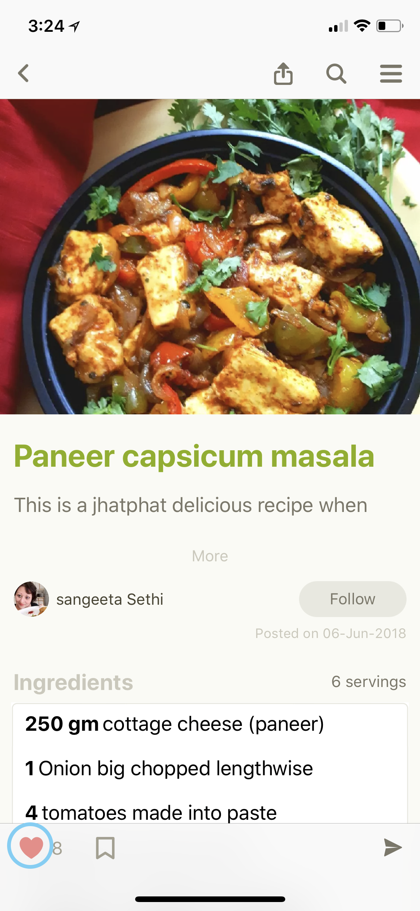
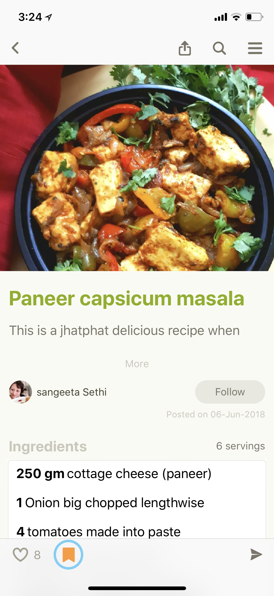
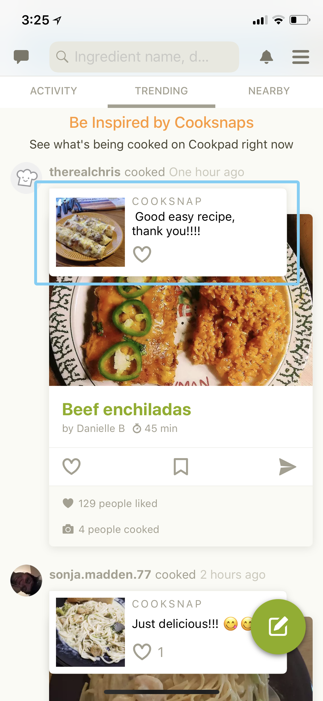
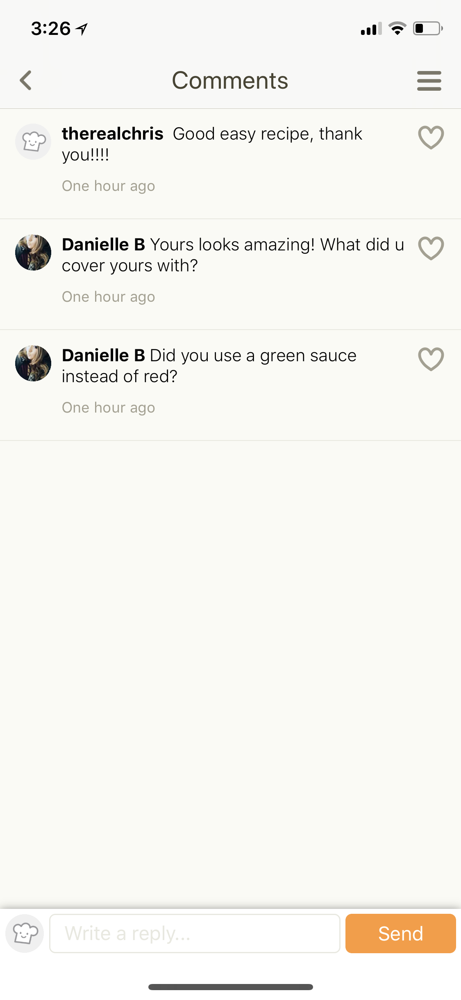
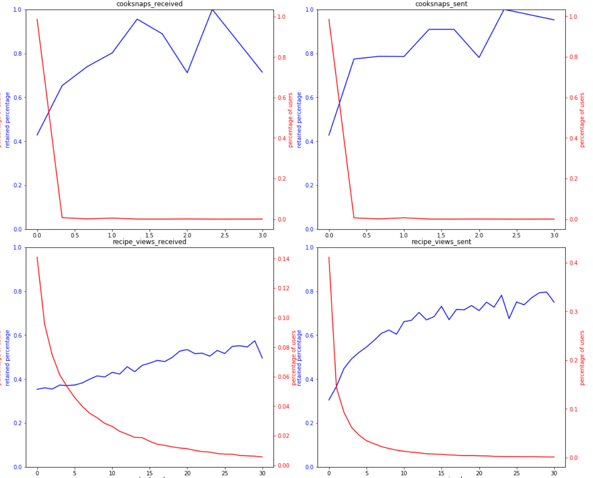

Author Retention Analysis
* * *
Who is an Author on Cookpad?
* * *
Anyone who publish a recipe on Cookpad is an Author
Why do we care about Authors?
* * *
Authors drive our platform forward.
Key actions on Cookpad
Recipe visit

Recipe Like
Recipe Bookmark
Key actions on Cookpad
Cooksnap
Comments
Signals
For each action a user does on cookpad, it sends a signal to other users.
Author Retention
An author publishes for the first time... and publishes again... and again...
Why will someone publish again?

Why did I publish again?
These were my stats after first publish.
Cohorts
Random forest classifier Accuracy
72%
Features
-
Signals Received by Author
Signals= likes, bookmarks, follows, cooksnaps, views, comments.
72% Accuracy.!
What if I have received those likes 10 days after my first recipe publish?
* * *
A Like today is worth more than a Like Tomorrow.
Time discounting signals received
$$discount factor = \gamma = e^{-rt}$$ where `r` is discount rate and `t` is time in days $$time\_discounted\_signals\_received = \sum\gamma * S_t$$ where `S_t` is signal received on day `t`
Random forest classifier Accuracy
81%
Features
-
Signals Received by Author
Signals= likes, bookmarks, follows, cooksnaps, views, comments. -
Time discounted Signals Received by Author
Signal received later is give less value.
Accidental Discovery
The boost in retention percentage for cooksnaps_sent and recipe_view_sent is more significant than either of those received signals.
Random forest classifier Accuracy
85%
Features
-
Signals Received by Author
Signals= likes, bookmarks, follows, cooksnaps, views, comments. -
Time discounted Signals Received by Author
Signal received later is give less value. -
Signals sent by Author
Signal sent by author after first publish.

Cookpad-Greece follow relations
Influence weighted signals
Each node will be given score based on the number of followers and their activity level $$I_x = \sum a_i$$ where `a_i` is activity level of nodes with directed edge to `x`.
$$Influence\ weighted\ signals = \sum S_x * I_x$$ where `S_x` is signal sent by user `x`
Random forest classifier Accuracy
87%
Features
-
Signals Received by Author
Signals = likes, bookmarks, follows, cooksnaps, views, comments. -
Time discounted Signals Received by Author
Signal received later is give less value. -
Signals sent by Author
Signal sent by author after first publish. -
Influence weighted signals
Signal received from highly influential user is given more weight.
What's Next?
-
User Sessions Data
Model user Journey features from sessions data.
Applications
-
Tweak Discovery of geniunely good recipe from an author who is about to leave
-
Batch PMs/ Notifications/ Emails to authors who are about to leave.